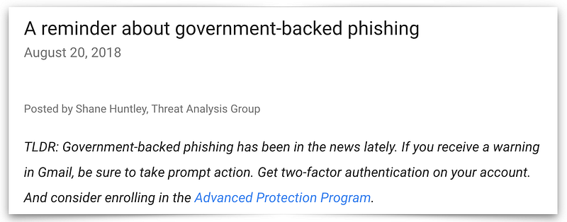
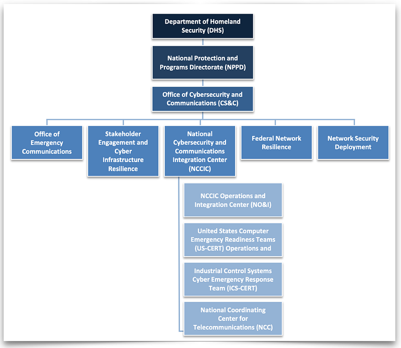

As part of the fellowship program at the Aspen Tech Policy Hub, I've spent several weeks with my colleagues Dr. Aloni Cohen and Dr. Amina Asim talking to people about how technology policy can better defend private enterprise from foreign nation-led cyberattacks. For example, how might we have helped Google defend against China during Operation Aurora or Sony from North Korea?
During these conversations I've found three problem areas that keep being raised:
This post shares my initial observations after interviewing current and past heads of information security from large tech companies, political organizations, and media companies who have been targets of nation state attackers. I've also spoken with current and former employees from the White House, Department of Homeland Security (DHS), National Security Agency (NSA), large consultancies, and industry organizations.
We first considered whether attacks led by foreign nations are particularly interesting, or should be considered part of the general cybersecurity landscape. We received consistent feedback that nation state attacks are indeed different for several reasons.
One key difference is that in the case of a nation-state attacker, the attacker's motivation is driven by some geopolitical context. For example, diplomatic or trade conflicts with China or Iran have been directly correlated with attack campaigns. The "Made in China 2025" plan published by the Chinese government is viewed as a roadmap of which US industries will be targeted for industrial espionage. This makes attribution is more important when dealing with nation state attackers, since their targets may not be obvious like a criminal attacker.
Another difference is the asymmetry between defenders and attackers. No single company will dedicate more resources to defense than a foreign country is able to spend on offense. Attackers are also playing a long game. They will be able to devote more time building their own capabilities and in misdirection than other attackers.
Many of my interview subjects also stated that adversaries treat companies as fair game. US companies are viewed as an extension of the United States government. Foreign governments (including US allies) conduct espionage on US companies no differently than they would against an embassy. The US similarly conducts its own espionage in its own interests. Attacks against US companies are not going away and nothing from the private sector is going to deter them from trying. What we can do is try to systematically raise the cost of such attacks.
That being said, outside critical infrastructure, only a handful of companies pay special attention to nation state threats. Large internet services are among the few outside the defense industry or critical infrastructure that have dedicated resources to nation state attackers, e.g. Google's Threat Analysis Group.

During my conversations, industry members consistently identified several areas they believed could help with incident detection, response, and post-mortem learning. These included more government threat intelligence sharing, incentives for transparency during breach investigations, and better interpersonal relationships with government.
Nearly every defender expressed a need for better, timely intelligence from government. Commercial threat intelligence products from companies like CrowdStrike and FireEye offer automated data collection, a feed of Indicators of Compromise (IOCs), and threat analysis. These are generally considered to be useful and of good quality — though very expensive. Regardless, several defenders suggested there are gaps that government actors might help fill.
Specifically, several of my interview subjects mentioned a need for more context about a threat actor beyond simple IOC-level data. Not everyone agreed what this actually entails. Some suggested the government might be able to identify broader campaigns across industries that an individual company could not. Others suggested the government should provide more tactical context about a specific attacker beyond typical IOCs, which could help with attribution.
Programs like the FBI's Infragard, DHS's CISA, and non-profit Information Sharing and Analysis Centers (ISACs) were considered mixed successes. Critical infrastructure like energy and telecom are viewed as having a good partnership with government. Multiple people cited the financial services FS-ISAC as a high-quality group. However, several people said multinational companies with a global user base are not as well served. They also suggested some of the government threat intelligence which does eventually get shared is stale by the time companies can see it.
Both industry and government stakeholders consistently pointed to the NSA as one of the only government agencies that holds actionable intelligence. Several also mentioned that intelligence shared through the DHS or FBI often originate in the NSA.
Multiple defenders expressed frustration at the disincentives for private companies to share information about breach incidents. While the Cybersecurity Information Sharing Act (CISA) gives some protections, people still expressed concerns about lawsuits, regulatory liability, and public opinion. What data they shared was either heavily vetted through lawyers or shared informally through backchannels.
There were anecdotes of organizations taking minimal steps to recover from a nation state attacker, e.g. just formatting some infected laptops without further investigation. This is damaging to both that company, which is likely still compromised, and to the ecosystem at large since it hides what may be a broader campaign.
The patchwork of different breach disclosure laws were also a source of frustration. It is unclear when the clock starts for a breach disclosure, making it difficult to comply. It took one company 3 days to detect, respond, and recover from an incident and 3 weeks to notify every affected locality.
Outside of critical infrastructure, several people we spoke with expressed that they did not have a government partner that they saw as being worthwhile to share data or work with. Everyone said the FBI was their first point of contact, but they had generally low expectations of getting help — though several expressed that the FBI is improving. DHS was largely viewed as ineffective and lacking technical depth to help. The success stories came from people who had personal contacts in government or other companies they could call directly.

During real world breach incidents, every defender we spoke with relied on informal interpersonal relationships to find or share information. Several expressed that knowing someone at the FBI, the NSA, or at another company helped them learn about broader campaigns, to respond faster, and to share data with newly discovered victims.
While formal sharing groups and channels existed, these informal backchannels proved critical during breach investigations. However, not every company has defenders with this network of connections.
Helping facilitate more of those connections both within industry, and between industry and government, could help defenders more quickly identify coordinated campaigns and respond.
There are several examples of organizations trying to encourage this. The UK's NCSC has a program called the Industry 100 explicitly designed to encourage collaboration between industry and government. Some industry players hold an invite-only, off the record workshops to discuss and share real world incidents. The EU's Sparta program is a cybersecurity competence network intended to direct future research.
Many of these discussions included solution and policy ideas to help in these three problem areas. I'll follow up with another post with some discussion of those ideas and what we think will make the most impact.